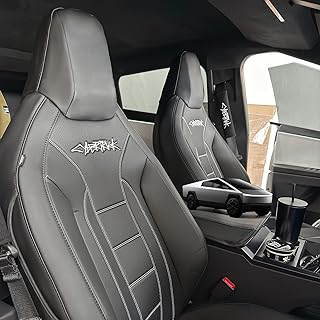
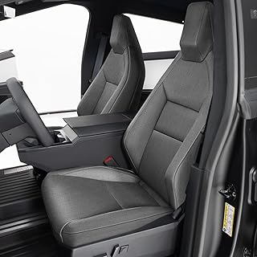
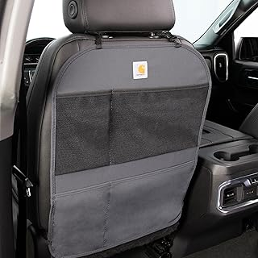

May 2026
Whether you're upgrading or buying your first, the right cybertruckseatcover in 2026 comes down to a few factors most buyers overlook.



→ #1 — Seat Covers for Tesla Cybertruck 2025 2024 PU Leather Full Set Armrest Cove — Great value
Overbuying features — Most people use 20% of high-end cybertruckseatcover features. Don't pay for what you'll never touch.
Panic buying on sale days — Prime Day and Black Friday cybertruckseatcover deals aren't always real discounts. Check year-round pricing.
Skipping negative reviews — A 4.5-star product with durability complaints tells you more than a 5-star product with 8 reviews.
Blind brand loyalty — Your favorite brand might not make the best cybertruckseatcover. Stay open to better options.
2026 has brought quality cybertruckseatcover options at every price point. See our complete guide for current recommendations.